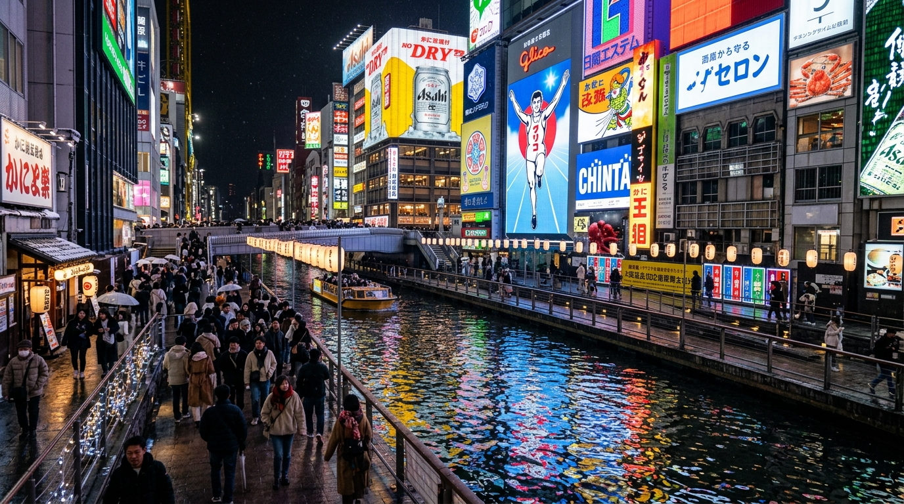

DAY 1 OF 9
Sat, 16 Jan 2027
❄️ 8°C • Crisp Winter
Arrive KIX 09:45 ✈️ • Check-in Plum Hotel & Dotonbori Night Walk
Estimated Spend
RM 120
~¥4,000
Halal Meals
2 Verified
100% Halal
Schedule
8 Activities
Timed Plan
Accommodation Base
Plum Hotel
Luggage drop upon arrival (~1:00pm); 3:00pm standard room check-in • 3:00pm (Day 1) – 9:00am (Day 3) • 2 Nights
DAY 1 ROADMAP & TRANSIT ROUTE
Geographic route & connected transit stops. Click any card or pin to explore.
Day 1 Chronological Timeline & Connected Transit
8 Connected Stops
09:45–11:45
Flight Arrival
Free / Included
Kansai International Airport (Arrive KIX & Customs)
Map
HIGHLIGHT ACTIVITY
Touchdown KIX T1 (09:45)
Immigration & Customs (~11:30+)
Top-up ICOCA Card (2F)
Flight touchdown at Terminal 1 (09:45). Clear immigration, collect baggage, and pass customs (clearing after ~11:30am).
Walk 3 min across the 2F covered walkway straight to Kansai Airport Railway Station ticket machines.
Kansai Airport Station (KIX)
•
2F Covered Walkway (150m / 3 min)
NEXT:
Airport → Osaka Namba
•Platform 1/2 ➔ Direct to Namba 3F concourse (44 min)
11:45–13:00
Train Transit
¥970 • ~RM 29
Airport → Osaka Namba (Nankai Airport Express)
Map
HIGHLIGHT ACTIVITY
Nankai Airport Express
Cross Sky Gate Bridge
Direct to Namba 3F (44 min)
Board Nankai Airport Express at Platform 1/2 (~11:55 / 12:05 departure).
Scenic 44-min ride across Osaka Bay Sky Gate Bridge direct into Namba Station 3F concourse (11 stops, ¥970).
Namba Station (Nankai)
•
Platform 1/2 ➔ Direct to Namba 3F concourse (44 min)
NEXT:
Namba Station ➔ Plum Hotel
•Walk 8 min (600m) from Namba South Exit or 3 min from Daikokucho Exit 1
13:00–13:45
Hotel Logistics
Free / Included
Namba Station ➔ Plum Hotel (Luggage Drop)
Map
HIGHLIGHT ACTIVITY
Drop Luggage at Front Desk
8-min Walk via Daikoku St
Prep for Lunch
From Namba South Exit, walk 8 min (600m) south down Daikoku shopping street (or Subway 1 stop to Daikokucho Exit 1).
Safely drop all suitcases at Plum Hotel front desk so you can explore unencumbered.
Plum Hotel Osaka Base
•
Walk 8 min (600m) from Namba South Exit or 3 min from Daikokucho Exit 1
NEXT:
Lunch: Halal Ramen Naniwaya
•Walk 4 min (320m) east from Plum Hotel
13:45–15:00
Halal Dining
¥1,500 • ~RM 45
Lunch: Halal Ramen Naniwaya
Map
HIGHLIGHT ACTIVITY
Chicken Paitan Ramen
Crispy Gyoza & Karaage
100% Halal Certified
Walk east 4 min (320m) from Plum Hotel directly to Halal Ramen Naniwaya.
Warm up with rich Halal chicken & beef broth ramen, freshly pan-fried dumplings, and karaage.
Halal Ramen Naniwaya
•
Walk 4 min (320m) east from Plum Hotel
NEXT:
Plum Hotel Check-in & Settle in / Prayer
•3:00pm standard room check-in
15:00–17:30
Hotel Logistics
Free / Included
Plum Hotel Check-in & Settle in / Prayer
Map
HIGHLIGHT ACTIVITY
Official Check-in (3:00 PM)
Unpack Winter Layers
Dhuhr & Asr Prayer Break
Standard room check-in opens at 3:00pm. Collect keys, head up to your room, and unpack.
Perform Dhuhr and Asr prayers, recharge devices, and rest before heading into Dotonbori.
Plum Hotel Osaka Base
•
3:00pm standard room check-in
NEXT:
Dotonbori & Shinsaibashi Night Walk
•Midosuji Line 1 stop ➔ Walk 3 min (250m) to Ebisu Bridge
17:30–20:00
Sightseeing
¥190 • ~RM 6
Dotonbori & Shinsaibashi Night Walk
Map
HIGHLIGHT ACTIVITY
Glico Running Man Photo
Dotonbori Canal Neon Walk
Shinsaibashi Arcades
Take Midosuji Line 1 stop from Daikokucho to Namba (2 min, ¥190) ➔ Exit 14 onto Ebisu Bridge.
Pose with the famous giant Glico sign, Kani Doraku moving crab, and explore bustling neon arcades.
Osaka-Namba Station (Exit 14)
•
Midosuji Line 1 stop ➔ Walk 3 min (250m) to Ebisu Bridge
NEXT:
Dinner: Halal Restaurant Matsuri
•Sennichimae Line 4 stops ➔ Walk 4 min (300m)
20:00–21:30
Halal Dining
¥2,200 • ~RM 65
Dinner: Halal Restaurant Matsuri
Map
HIGHLIGHT ACTIVITY
DIY Takoyaki & Sukiyaki
Hot Okonomiyaki Grill
Dedicated Prayer Space
From Namba, take Sennichimae Line 4 stops to Nodahanshin Station (7 min, ¥240) ➔ Exit 7, walk 4 min.
Experience table-side DIY Halal takoyaki, okonomiyaki, and sukiyaki with dedicated on-site prayer space.
Nodahanshin Station (Exit 7)
•
Sennichimae Line 4 stops ➔ Walk 4 min (300m)
NEXT:
Return to Plum Hotel Osaka
•Subway 10 min ➔ Walk 3 min (250m) to Plum Hotel
21:30–22:30
Hotel Logistics
¥240 • ~RM 7
Return to Plum Hotel Osaka
Map
HIGHLIGHT ACTIVITY
Subway Back to Daikokucho
Rest & Recovery
Prep for Nara Deer Day 2
Sennichimae Line to Namba, transfer to Midosuji Line 1 stop to Daikokucho Station Exit 1 (¥240).
Walk 3 min back to Plum Hotel. Get a deep night's sleep ahead of Nara Park deer tomorrow!
Daikokucho Station (Exit 1)
•
Subway 10 min ➔ Walk 3 min (250m) to Plum Hotel